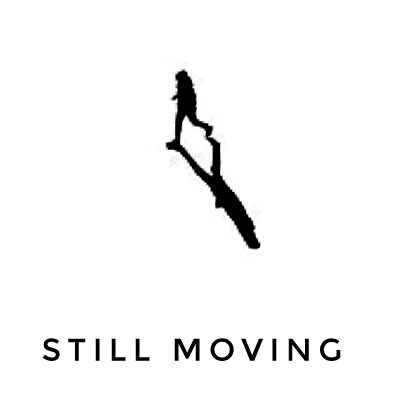
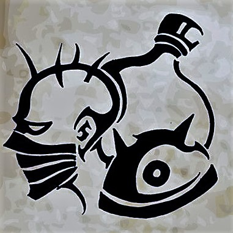

SINGED
炼金术士
炼金术士·辛吉德，是竞技游戏《英雄联盟》中的英雄角色。
辛吉德是祖安备受尊敬的炼金世家的后裔。即使在年轻之时，他调制药剂的天赋便远在同龄人之上，很快他便在化学同道中鹤立鸡群。因此他被臭名昭著的沃里克收为徒弟也就不足为奇了。沃里克当时是诺克萨斯和艾欧尼亚对战时的军队雇佣药剂师。在沃里克的实验室里，辛吉德无休无止地劳作着，迅速地领悟着他师傅致命技艺的每一个细节。他毫不担心他的劳作会带来死亡与毁坏的恶果。
当变狼幻想症的诅咒降临到他师傅的头上时，辛吉德已经准备就绪，迫不及待地要从一名苦工转变成发明家。他准备给艾欧尼亚边境带来新的灾难，这样便可以向世人宣告他的天赋。他对进步的渴望之火是不可熄灭的，当缺乏合适的实验对象时，这位急不可耐的化学家便常常想着要将他那易挥发的药剂倒在自己的身体上。
